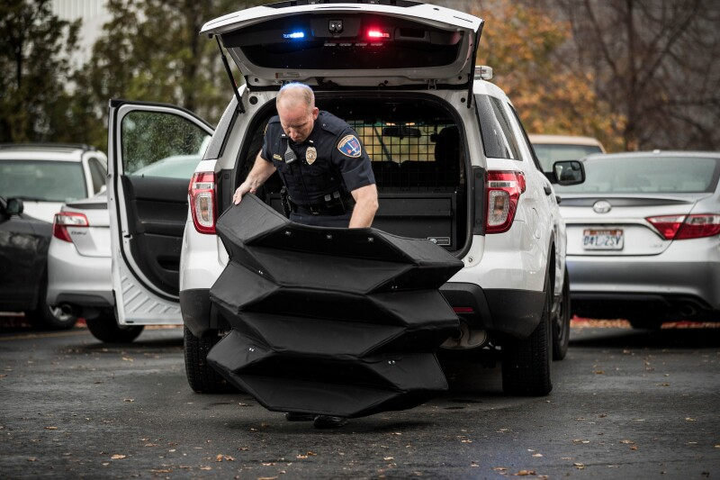
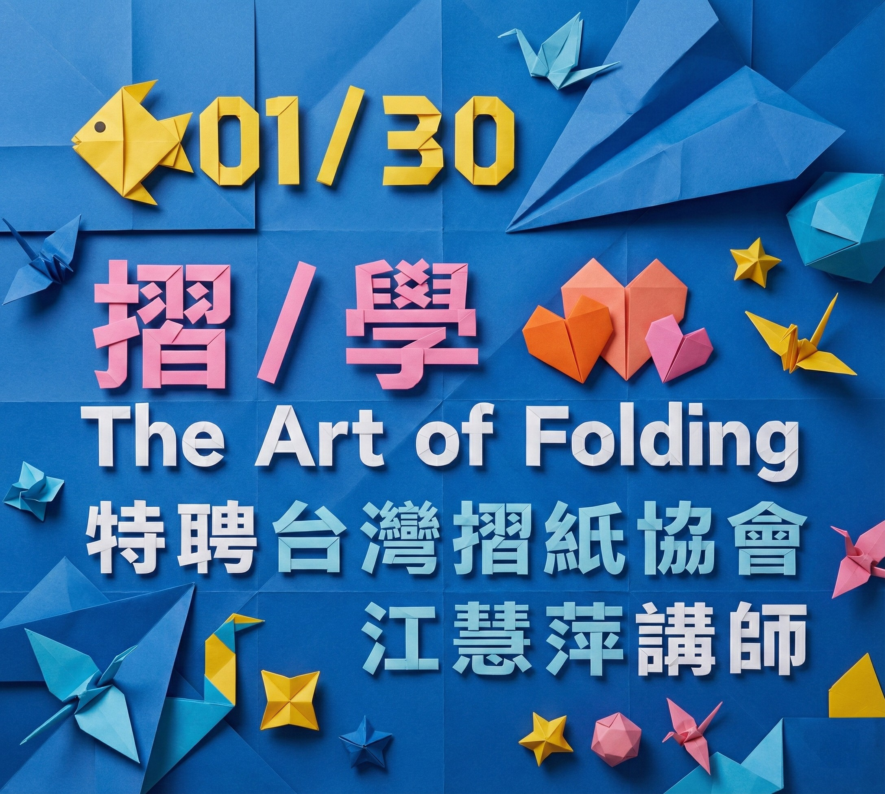
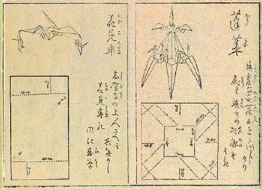
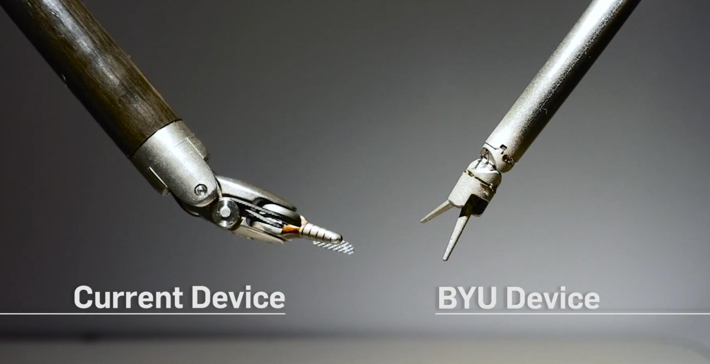
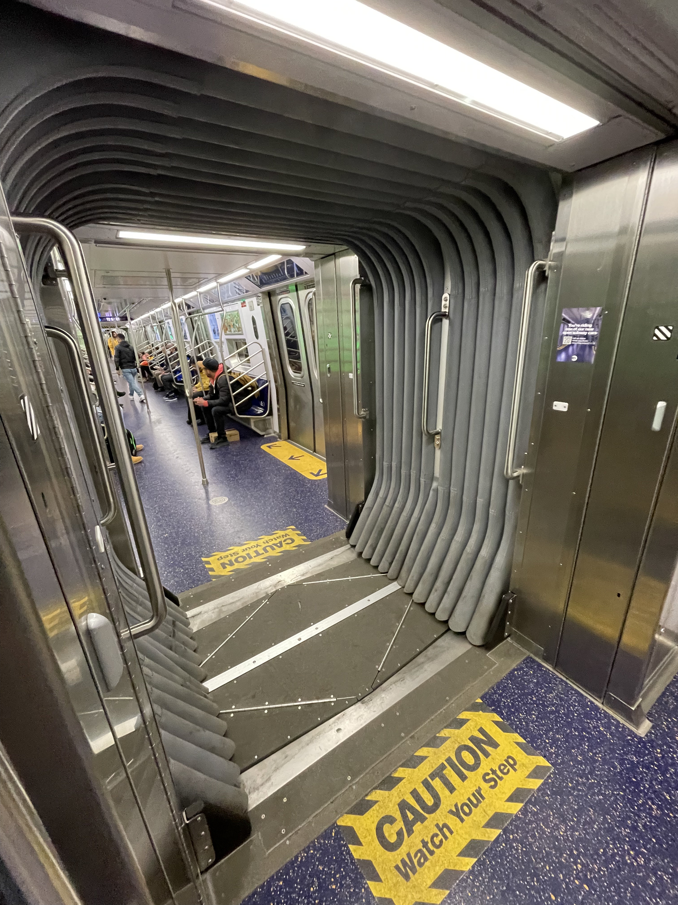

POLICE
可摺疊防彈盾牌
BYU 大學研發。利用「吉村摺疊 (Yoshimura)」結構，將防彈盾牌收在警車後廂，展開後能擋下從手槍到步槍的子彈。
從傳統的馬年紅包袋，到外太空的衛星面板。 當我們摺起這張紙，我們摺疊的不只是藝術， 更是幾何學與未來的科學。

傳說中...
一張紙最多只能對摺 7 次
這是真的嗎？

世界紀錄是 12 次
Britney Gallivan
2002年，高中生 Britney 推導出公式 L = πt/6(2^n + 4)(2^n - 1)，並用 1.2公里 長的衛生紙打破紀錄！

摺紙在日本已有400多年歷史，但真正的文藝復興發生在20世紀。現代摺紙大師 吉澤章 (Akira Yoshizawa) 發明了一套由「點、線、箭頭」組成的通用語言。這套系統讓複雜的摺法得以被精確記錄並傳播到全世界，正式奠定了現代摺紙工程學的基礎。
傳統摺紙允許多張紙拼接，但現代「技術摺紙」挑戰極限：「只用一張正方形紙、完全不剪裁」。
像大師 Robert Lang 僅用一張紙就能摺出帶有數百根刺的仙人掌，這不只是藝術，更是極度精密的數學運算成果。
摺紙能以極少的加工程序與材料成本，將一張簡單的平面材料（2D）瞬間轉換為複雜且功能強大的立體結構（3D）。這項特性完美解決了現代製造業與航太工程中「如何將運送時的大物體有效微縮化，並在抵達目的地後精確展開」的極限難題。
試試看：一張平整的紙張原本柔軟無力，但只要依照特定的幾何規律摺出幾道痕跡，它就能獲得驚人的結構強度並承受數倍於自身的重量。透過精密的幾何摺疊設計，我們可以讓柔軟的薄膜瞬間變得堅固無比，成為可承重的建築結構。
摺紙結構可以被精妙地設計成具有「雙穩態」特性，這意味著它在完全「收納」與完全「展開」的兩種狀態下都能保持物理上的穩定平衡。這種機制不需要額外的馬達或持續的能量來維持開合狀態，對於資源極度受限的太空任務或微型醫療機器人來說至關重要。
這裡收藏了科學家如何利用「摺疊」解決醫療、建築與安全難題的真實案例。

BYU 大學研發。利用「吉村摺疊 (Yoshimura)」結構，將防彈盾牌收在警車後廂，展開後能擋下從手槍到步槍的子彈。

楊百翰大學研發 (Oriceps)。無鉸鏈摺紙設計，零件減少75%，專為達文西微創手術設計，能進入人體更深處。

就像手風琴一樣！車廂連接處利用「蛇腹摺疊」，讓列車在高速轉彎時能自由伸縮，同時保持外觀平滑，大幅降低風切聲與空氣阻力。

解決了厚鋼板摺疊的物理難題。這項技術能讓卡車載運的橋樑在災區快速展開，也能用於建設月球基地。

為了確保氣囊在幾毫秒內不打結展開，科學家使用高階數學演算法來模擬氣囊的最佳摺疊路徑。
Let's explore below
這是有史以來最經典的摺紙工程應用。1995年，日本科學家三浦公亮發明了一種摺法，能讓巨大的太陽能板「一次性」順暢展開，完全不需要複雜的機械手臂。
只要拉對角線，整個結構同時展開。


* Miura-ori 三浦摺疊 (1/4)
Engineering with Origami - Veritasium
Wen Tzao Winter Camp | 台灣摺紙協會 © 2026
Art of Origami Project
Subtitle